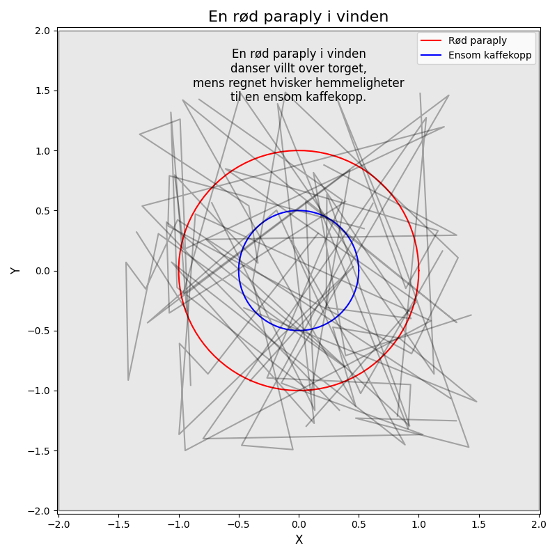

En rød paraply i vinden danser villt over torget, mens regnet hvisker hemmeligheter til en ensom kaffekopp.

import matplotlib.pyplot as plt
import numpy as np
# Dikt
dikt = """
En rød paraply i vinden
danser villt over torget,
mens regnet hvisker hemmeligheter
til en ensom kaffekopp.
"""
# Parametre for visualisering
x = np.linspace(0, 2 * np.pi, 100)
rød_paraply_radius = 1
kaffekopp_radius = 0.5
# Figur og akser
fig, ax = plt.subplots(figsize=(8, 8))
ax.axis('equal') # Sikre at cirkler ser ud som cirkler
# Rød paraply (cirkel)
ax.plot(rød_paraply_radius * np.cos(x), rød_paraply_radius * np.sin(x), 'r', label='Rød paraply')
# Kaffekopp (cirkel)
ax.plot(kaffekopp_radius * np.cos(x), kaffekopp_radius * np.sin(x), 'b', label='Ensom kaffekopp')
# Torget (rektangel)
ax.set_xlim([-2, 2])
ax.set_ylim([-2, 2])
ax.add_patch(plt.Rectangle((-2, -2), 4, 4, facecolor='lightgray', edgecolor='black', alpha=0.5))
# Regn (streger)
for i in range(10):
regn_x = np.random.uniform(-1.5, 1.5, 10)
regn_y = np.random.uniform(-1.5, 1.5, 10)
ax.plot(regn_x, regn_y, 'k', alpha=0.3)
# Tekst
ax.text(0.5, 0.9, dikt, ha='center', va='center', fontsize=12, transform=ax.transAxes)
# Tittel og etiketter
ax.set_title('En rød paraply i vinden', fontsize=16)
ax.set_xlabel('X', fontsize=12)
ax.set_ylabel('Y', fontsize=12)
# Legende
ax.legend(loc='upper right')
# Juster layout
plt.tight_layout()
# Lagre figuren
plt.savefig(output_path)execution_ok=True fallback_used=False image_ok=True